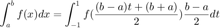
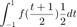
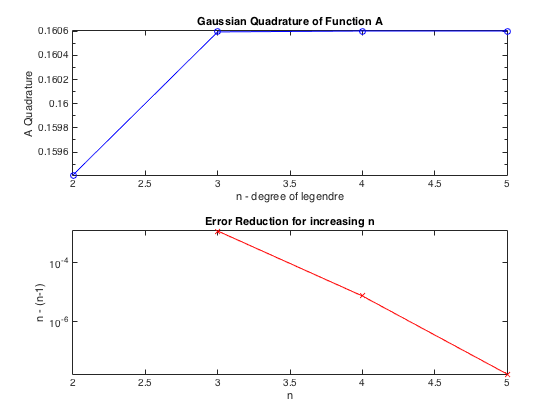
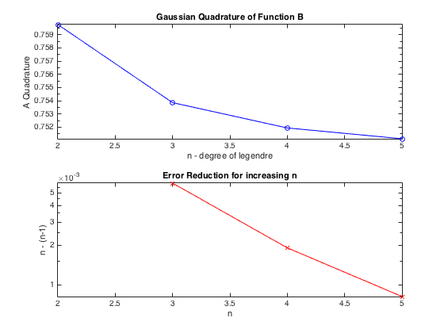

Contents
Matt McFarland
E91, Lab 5, Question 2
close all; clear all;
Constants and In-Line Functions
Functions
Fa = @(x) ((x.^2) .* exp(-x)); Fb = @(x) (x.^(1/3));
Constants
from = 0; % start for integration, a to = 1; % end for integration, b n = [2 3 4 5]; % degrees of Legendre Polynomials
Load Legendre Polynomial Data
Obtained in textbook. Table 4.12
Column 1 = Degree
Column 2 = Root
Column 3 = Coefficient
L = load('legendre.txt')
L =
2.0000 -0.5774 1.0000
2.0000 0.5774 1.0000
3.0000 -0.7746 0.5556
3.0000 0 0.8889
3.0000 0.7746 0.5556
4.0000 -0.8611 0.3479
4.0000 -0.3400 0.6521
4.0000 0.3400 0.6521
4.0000 0.8611 0.3479
5.0000 -0.9062 0.2369
5.0000 -0.5385 0.4786
5.0000 0 0.5689
5.0000 0.5385 0.4786
5.0000 0.9062 0.2369
Map Legendre Roots to [0 1]

Where a is 0 and b is 1.

We can evaluate this transformed integral of f using the Gaussian Quadrature formula
TtoX = @(t) (1/2*(t+1)); dx_t = (to - from)/2;
Get Roots and Constants for n = 2
a1_2 = L(1,3); a2_2 = L(2,3); root1_2 = L(1,2); root2_2 = L(2,2);
Get Roots and Constants for n = 3
a1_3 = L(3,3); a2_3 = L(4,3); a3_3 = L(5,3); root1_3 = L(3,2); root2_3 = L(4,2); root3_3 = L(5,2);
Get Roots and Constants for n = 4
a1_4 = L(6,3); a2_4 = L(7,3); a3_4 = L(8,3); a4_4 = L(9,3); root1_4 = L(6,2); root2_4 = L(7,2); root3_4 = L(8,2); root4_4 = L(9,2);
Get Roots and Constants for n = 5
a1_5 = L(10,3); a2_5 = L(11,3); a3_5 = L(12,3); a4_5 = L(13,3); a5_5 = L(14,3); root1_5 = L(10,2); root2_5 = L(11,2); root3_5 = L(12,2); root4_5 = L(13,2); root5_5 = L(14,2);
Calculate Guassian Quadratures for Function A
A = zeros(1,length(n)); N_2a = (a1_2 * Fa(TtoX(root1_2)) + a2_2 * Fa(TtoX(root2_2))) * dx_t; fprintf('Part A: n = 2 -> area = %.25f\n',N_2a); fprintf('Evaluations -> 2\n'); A(1) = N_2a; N_3a = (a1_3 * Fa(TtoX(root1_3)) + a2_3 * Fa(TtoX(root2_3)) + ... a3_3 * Fa(TtoX(root3_3))) * dx_t; fprintf('Part A: n = 3 -> area = %.25f\n',N_3a); fprintf('Evaluations -> 3\n'); A(2) = N_3a; N_4a = (a1_4 * Fa(TtoX(root1_4)) + a2_4 * Fa(TtoX(root2_4)) + ... a3_4 * Fa(TtoX(root3_4)) + a4_4 * Fa(TtoX(root4_4))) * dx_t; fprintf('Part A: n = 4 -> area = %.25f\n',N_4a); fprintf('Evaluations -> 4\n'); A(3) = N_4a; N_5a = (a1_5 * Fa(TtoX(root1_5)) + a2_5 * Fa(TtoX(root2_5)) + ... a3_5 * Fa(TtoX(root3_5)) + a4_5 * Fa(TtoX(root4_5)) + ... a5_5 * Fa(TtoX(root5_5))) * dx_t; fprintf('Part A: n = 5 -> area = %.25f\n',N_5a); fprintf('Evaluations -> 5\n\n'); A(4) = N_5a; difA = zeros(1,length(n)); for i = 2:length(n) difA(i) = abs(A(i) - A(i-1)); end figure() subplot(2,1,1) semilogy(n,A,'bo-') xlabel('n - degree of legendre') ylabel('A Quadrature') title('Gaussian Quadrature of Function A') subplot(2,1,2) semilogy(n,difA,'rx-') xlabel('n'); ylabel('n - (n-1)') title('Error Reduction for increasing n') axis([n(1) n(end) -inf inf])
Part A: n = 2 -> area = 0.1594104309667113694715113 Evaluations -> 2 Part A: n = 3 -> area = 0.1605953868159704922558007 Evaluations -> 3 Part A: n = 4 -> area = 0.1606027775142595537261059 Evaluations -> 4 Part A: n = 5 -> area = 0.1606027941137231351831360 Evaluations -> 5
Calculate Gaussian Quadratures for Function B
B = zeros(1,length(n)); N_2b = (a1_2 * Fb(TtoX(root1_2)) + a2_2 * Fb(TtoX(root2_2))) * dx_t; fprintf('Part B: n = 2 -> area = %.25f\n',N_2b); fprintf('Evaluations -> 2\n'); B(1) = N_2b; N_3b = (a1_3 * Fb(TtoX(root1_3)) + a2_3 * Fb(TtoX(root2_3)) + ... a3_3 * Fb(TtoX(root3_3))) * dx_t; fprintf('Part B: n = 3 -> area = %.25f\n',N_3b); fprintf('Evaluations -> 3\n'); B(2) = N_3b; N_4b = (a1_4 * Fb(TtoX(root1_4)) + a2_4 * Fb(TtoX(root2_4)) + ... a3_4 * Fb(TtoX(root3_4)) + a4_4 * Fb(TtoX(root4_4))) * dx_t; fprintf('Part B: n = 4 -> area = %.25f\n',N_4b); fprintf('Evaluations -> 4\n'); B(3) = N_4b; N_5b = (a1_5 * Fb(TtoX(root1_5)) + a2_5 * Fb(TtoX(root2_5)) + ... a3_5 * Fb(TtoX(root3_5)) + a4_5 * Fb(TtoX(root4_5)) + ... a5_5 * Fb(TtoX(root5_5))) * dx_t; fprintf('Part B: n = 5 -> area = %.25f\n',N_5b); fprintf('Evaluations -> 5\n\n'); B(4) = N_5b; difB = zeros(1,length(n)); for i = 2:length(n) difB(i) = abs(B(i) - B(i-1)); end figure() subplot(2,1,1) semilogy(n,B,'bo-') xlabel('n - degree of legendre') ylabel('A Quadrature') title('Gaussian Quadrature of Function B') subplot(2,1,2) semilogy(n,difB,'rx-') xlabel('n'); ylabel('n - (n-1)') title('Error Reduction for increasing n') axis([n(1) n(end) -inf inf])
Part B: n = 2 -> area = 0.7597780222928949278582422 Evaluations -> 2 Part B: n = 3 -> area = 0.7538554699822079818716247 Evaluations -> 3 Part B: n = 4 -> area = 0.7519464766575401082349117 Evaluations -> 4 Part B: n = 5 -> area = 0.7511323126283468987196557 Evaluations -> 5